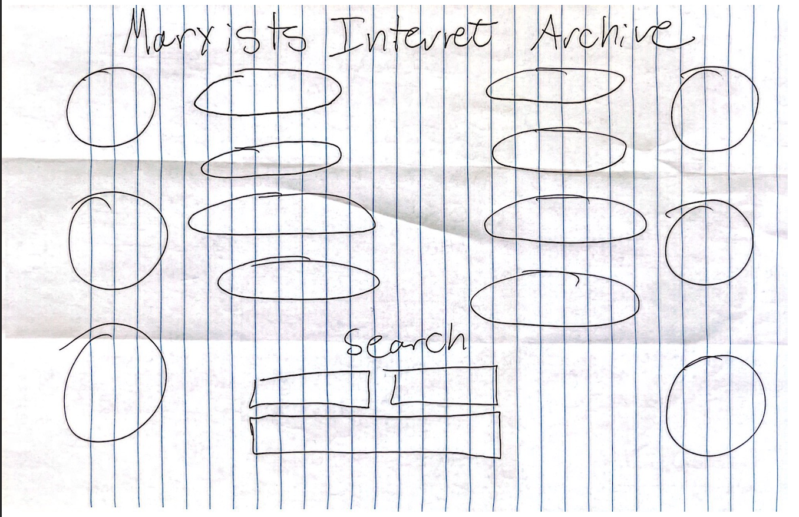
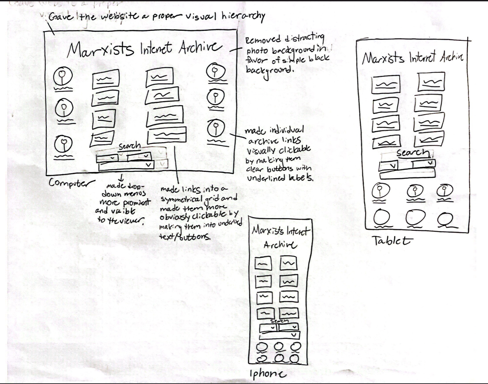
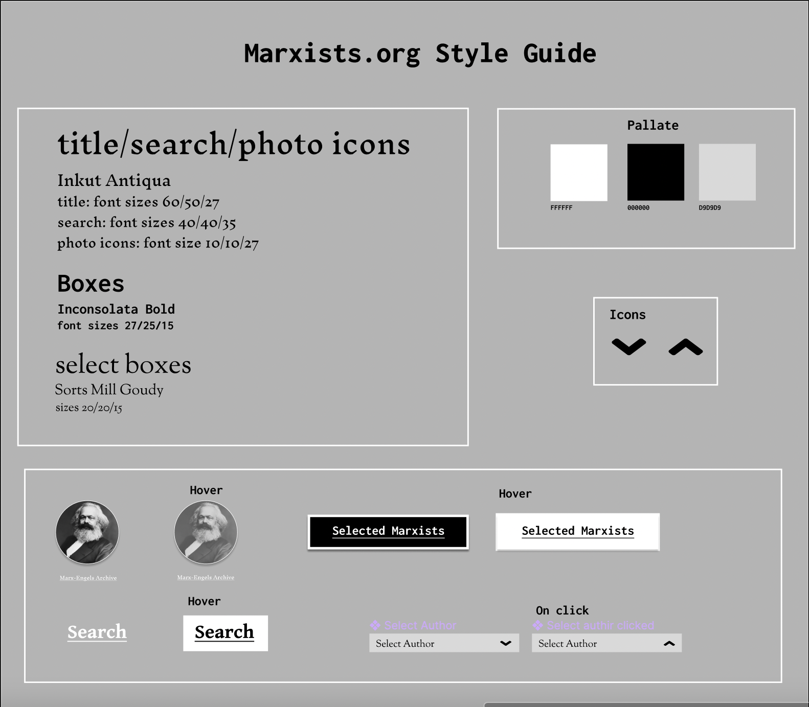
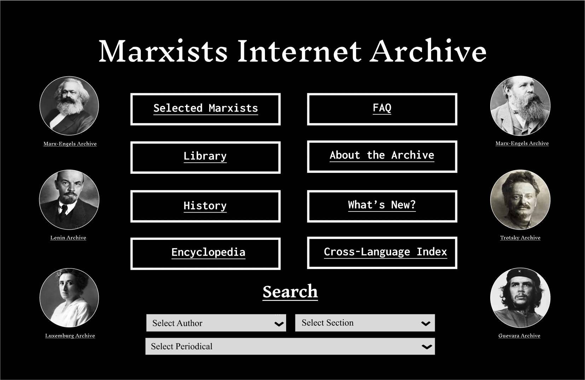
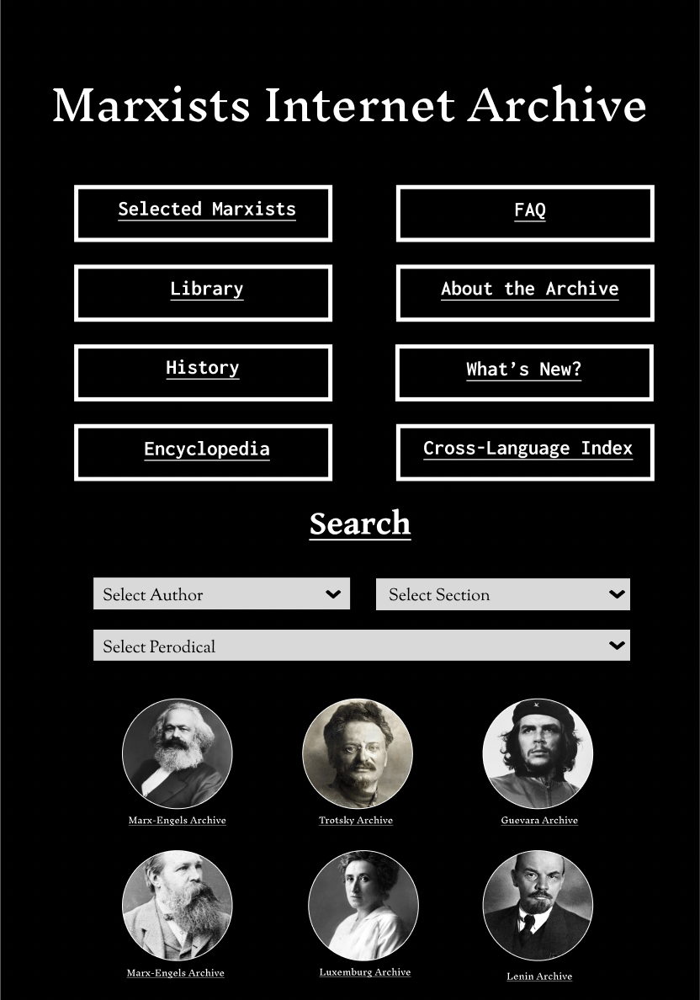
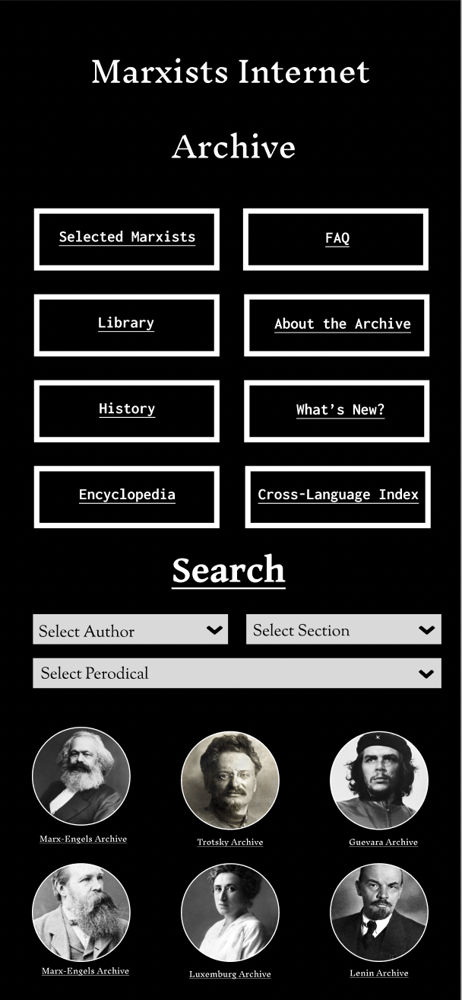

Responsive Redesign Project
The aim of this project was to redesign a webpage in order to develop design skills, identify accessibility issues, and gain coding experience as it relates to web-app interfaces. During this project, I underwent an entire design process to truly practice every stage in the journey.
Identifying Usability Problems
Website and page:
I chose to redesign marxists.org because when I polled several close friends of mine about terrible interfaces they have used, two of them named this particular website independently. Both of these friends are history majors, as am I, and I have a particular interest in making sure public archives are accessible to the public!
Finding Problems:
The text itself is incredibly low-resolution. The page does not fill the entire screen lengthwise and if the computer screen is not fully extended to the bottom, you do not see the select boxes. The select boxes visually clash with the rest of the screen. The text colors do not coordinate with the page and seem chosen just because they are bright. The background images are incredibly hard to make out and therefore seem unnecessary. There is no comprehensible visual hierarchy.Accessability:
The Lighthouse report gave this page a 56/100. The WebAIM test gave a slightly more favorable report, praising that the specific language was identified and that one image map area has alt text. However, none of the other images have alt text, there is no heading structure or page regions, and the layout table at the bottom is not visible or particularly striking. They also recognized that the links to the particular scholars’ archives have no text and are not visually clickable.
Sketches
I completed nine speed-sketches to test out potential ideas for the interface:

Then, I combined elements from the sketches into a final sketch:
Lo-Fi Mockups
Based on the final sketch, I sketched some lo-fi mockups, which incorporated the design of the sketch and the accessibility and design problems I identified earlier.
Style Guide
My style guide went through two iterations: originally, I had some red elements on the black background, but after conducting some research on accessible color pallates I saw that in keeping the red on black color scheme of the original page, I was not improving on the visibility of the original website. I thus decided to make a more visually striking style guide based on black, white, and shades of grey in order to match the greyscale images retained from the original design.
High-Fi Mockups:
Here are my final high-fidelity mockups:
  